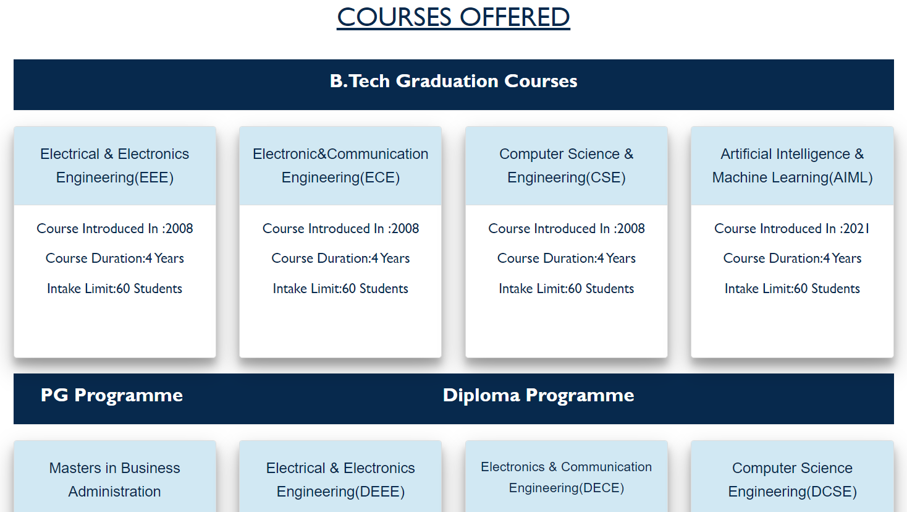

Home
To implement this thought, we established an Education Society which aims at breaking grounds for high level educational institutions. Trinity College of Engineering and Technology (T.C.E.T.) is a premier initiative of this society. The institute aims to impart knowledge by attracting and involving well experienced, qualified faculty and providing best infrastructural facilities to the students. T.C.E.T. views interaction and collaboration with industry as critical for preparing successful and trend setter technocrats for tomorrow. Workshops and guest lectures with a focus on developing entrepreneur skills will be our mainstay. We are leading step by step to achieve our objectives to transform the Institute into one of the notable technical institutes of the country. T.C.E.T. is ready with the facilities to provide best services to you. It is for you to avail this opportunity. Our Vision To be the fountain head in producing highly skilled, globally competent engineers. Our Values Such an esteemed institutions are Trinity Educationaly Institutions, where excellence exemplifies setting new standards in the field of academics with it continuous process to its consistency. Our Mission Design and implement curriculum that equips students with professional and life skills.Recruit, develop and retain outstanding faculty to achieve academic excellence.• Promote and undertake quality research in thrust areas of science and Technology.Collaborate with industry and academia to meet the changing needs of society.Foster innovation and cultivate the spirit of entrepreneurship among students
About us
Mission Trinity has been established with a commitment to making higher education available to all those who are deprived of object-oriented modular education with an emphasis on practical knowledge keeping in view the emerging industrial needs, business opportunities, and research requirements globally in different areas of science, technology, and management. Our mission is our direction to think and act. To provide an affordable high-quality education student centered teaching-learning processes to the professional aspirants of rural areas to impart skill-based and job oriented training on cutting-edge technologies and achieve 100% placements. To create a healthy and conducive atmosphere among the faculty, students both professionally and ethically and have an effective interaction with industry professional, alumni academicians of premier institutions. To generate technically sound and knowledge Engineers to cater the needs of the nation. To promote research activities, among the students.
Departments
B.Tech Graduation Courses
1.Electrical & Electronics Engineering(EEE) Course Introduced In :2008 Course Duration:4 Years Intake Limit:60 Students2. Electronic&Communication Engineering(ECE) Course Introduced In :2008 Course Duration:4 Years Intake Limit:60 Students
3. Computer Science & Engineering(CSE) Course Introduced In :2008 Course Duration:4 Years Intake Limit:60 Students
4. Artificial Intelligence & Machine Learning(AIML) Course Introduced In :2021 Course Duration:4 Years Intake Limit:60 Students
5. PG ProgrammeDiploma Programme Masters in Business Administration Course Introduced In :2009 Course Duration:2 Years Intake Limit:120 Students
6.Electrical & Electronics Engineering(DEEE) Course Introduced In :2013 Course Duration:3 Years Intake Limit:60 Students
7. Electronics & Communication Engineering(DECE) Course Introduced In :2013 Course Duration:3 Years Intake Limit:60 Students
8.Computer Science Engineering(DCSE) Course Introduced In :2023 Course Duration:3 Years Intake Limit:60 Students
Admissions
Admissions to the B.Tech/Diploma/MBA program shall be made subject to the eligibility, qualifications, and specialization prescribed by the university from time to time. Admissions at the top engineering colleges in Telangana is made on the basis of merit rank obtained by the qualifying candidate at an Entrance Test conducted by the University, subjected to reservations prescribed by the university from time to time. EAMCET: “Engineering Agriculture and Medicine Common Entrance Test” EAMCET Entrance Examination is the gateway for entry into various professional courses offered in Government/Private Telangana engineering colleges. The EAMCET test is taken by a large number of engineering and medical aspirants in the state. Presently, JNTU located in Hyderabad conducts the examination on behalf of TSCHE. Qualifying EAMCET Exam is compulsory to get admission into B.Tech courses through counselling quota. In every branch, 70% of seats are filled through web counselling. The remaining 30% of seats in every branch are filled by management (B category or Management Quota). For details on web counselling and giving options in web kindly click the given below web link. https://tseamcet.nic.in CEEP: “Common Entrance Examination for Admission into Polytechnic” The State Board of Technical Education and Training, Telangana State, Hyderabad will conduct “Common Entrance Examination for Admission into Polytechnic” or the candidates seeking admission to all Diploma Courses in Engineering /Non-Engineering/ Technology offered at Polytechnics/ Institutions (including Aided and Unaided Private Polytechnics/ Institutions) in Telangana State. Detailed Information regarding eligibility, age, syllabus, etc., are given in the “CEEP-2019 Booklet” which is supplied along with ICR FORM and is available for sale at a cost of Rs.10/- (Rupees Ten only) from the Principals of Govt. Polytechnic, Private Polytechnics and TS online centres. Details can be seen on website. https://tspolycet.nic.in I-CET : “Integrated Common Entrance Test” The Integrated Common Entrance Test is conducted for admission into 1st year MBA Degree Course in the University and Affiliated best MBA colleges in Telangana . For details on MBA admission, kindly click the given below web link. https://icet.tsche.ac.in
For Admission Details Contact Dr. M.Ganesh Principal Trinity College of Engineering and Technology